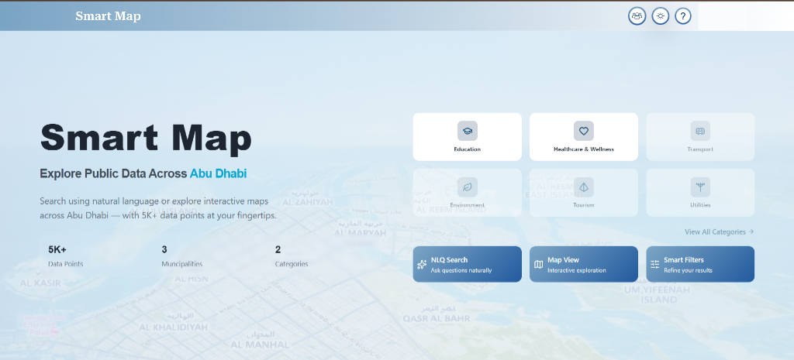
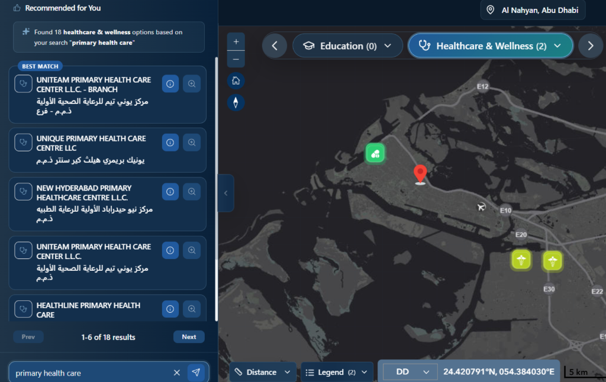
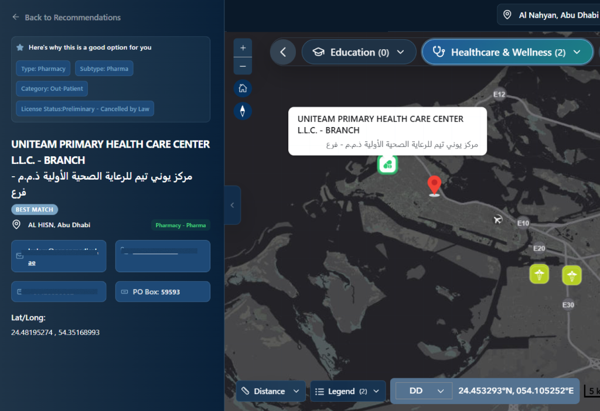

Smart Map
Redesigning a government spatial platform to make location-based services accessible to everyday residents — not just GIS experts.
Details shared here are limited to UX process and outcomes. Sensitive platform data and client information are kept confidential.

↓ 30%
Drop in navigation errors (usability testing)
2×
Faster service discovery vs. original interface
74 SUS
Post-redesign score — up from 58, crosses “Good” threshold
2M+
Residents served by the platform
What Is SmartMap
SmartMap is a public-facing mapping platform built for UAE residents to find government services, explore location data, and interact with spatial information in their area.
The challenge: the platform was originally built with a data-first mindset — powerful for analysts, but overwhelming for everyday residents trying to find a nearby hospital or school. My role was to evaluate the existing experience and redesign the interaction model for the general public, without removing utility for those who needed deeper access.
What Was Breaking the Experience
- Navigation Overload — Too many tools visible at once with no grouping or priority. First-time users didn’t know where to begin.
- Layer Panel Complexity — All data layers were listed flat with no categories meaningful to a general audience.
- No browse-by-need flow — Users had to enable the right layer before finding a service, assuming knowledge most residents didn’t have.
- High Cognitive Load — The density of options made the platform feel like internal software, not a public service tool.
Research & Evaluation
Before touching any design decisions, I mapped the current experience from a real user’s perspective.
- Conducted task-based usability tests with everyday users unfamiliar with GIS tools
- Documented friction points across navigation, layer management, and search flows
- Identified where users dropped off or asked for help during core tasks
- Reviewed comparable public map platforms to establish usability benchmarks
Key finding: Most users couldn’t complete a basic task like “find the nearest hospital” without assistance — not because they didn’t understand maps, but because the interface had no clear starting point or visual hierarchy.
What I Changed and Why
Structured Toolbar
Reduced visible primary actions. Advanced tools moved into a collapsible secondary panel — users found core functions faster with less scanning.
Categorised Layers
Grouped layers into service-based categories (Health, Education, Transport) with a search filter. Layer selection became faster and more intuitive.
Find Services Entry Point
Browse by what you need — not by dataset name. Task completion for basic service discovery improved significantly.
Progressive Disclosure
Advanced filters, export options, and data details appear only when needed. Reduced visual noise on the main map view.
System Logic & User Flows
Flow 1 — Resident Journey
Flow 2 — Admin Workflow
This dual-flow architecture ensures the platform serves both the public need for discovery and the government need for data accuracy.


Core Experience
Finding Nearest Facilities
Residents browse by service category — Health, Education, Government — and the map highlights matching facilities with distance, availability, and contact info. No layer knowledge required.
Real-Time Service Data
Each facility card shows live data where available: operating hours, service types, location. Government staff update records through the admin dashboard — residents see it instantly on the map.
Onboarding for First-Time Users
A short contextual guide triggers on first visit, dismissible at any point. Reduced confusion and drop-off among users new to map-based interfaces.
Key Decisions
Separated public and admin interfaces completely. Tested a toggle approach — users couldn't find their way back. Two modes, zero confusion.
Replaced flat layer lists with semantic grouping. Users find data by intent ("I want to see schools"), not by technical dataset names.
Added persistent layer indicators so users always know what the map is currently showing. Eliminated the "what am I looking at?" problem.
Designed a presentation layer on top of the existing GIS backend. Didn't require any data restructuring — reduced implementation risk.
Outcome
9 → 3
Flat layers restructured into semantic groups
2 Modes
Discovery (public) + Professional (admin)
NLQ
Natural language search over 40+ datasets
0
Backend changes required
The hardest part wasn’t the design — it was finding the balance between simplicity for the public and depth for users who needed more. Government platforms serve a wide audience: residents with low digital literacy, professionals who need data access, and everything in between. The solution wasn’t to strip the platform down — it was to create a clear default experience that didn’t hide advanced capability.
What I Learned
If I could extend this project, I’d run another round of testing specifically with users who have limited digital experience — a critical group for any public-facing government service. Designing for the general public is a different challenge than designing for professionals: the affordances you rely on can’t be assumed.